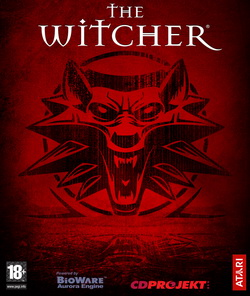
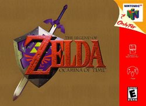

My Favourite Games
Seeing as how I'm studying game programming, I'm sure most of you would have guessed that I'm an avid gamer. Over my lifetime, I have played a ton of games for many different platforms. As a kid, I started from Nintendo, then Super Nintendo, N64, PC, Xbox, all the way until Xbox 360. Now I play on the PC more than consoles. My favourite genre which I'd play over anything is rpg. Games like the Witcher series, Mass Effect, are some of my all time favourites. On this page, I'm going to list some of the games I've played in recent times which deserve a mention. Unfortunately, there is going to more rpg games on it but I'll try to be unbiased in my selections. I won't mention any online games on here like League of Legends, just single player games.
| Name: | Description/Review: |
|---|---|
| The Witcher Series | The Witcher series is probably the most recent rpg games I've played. I played the first 2 games out of the trilogy but didn't get a chance to play the 3rd and final one released recently. Having said that, the games are really awsome. Gameplay, mechanics and plot are very well done. Only problem I'd say is the fact that the different choices you make in the game has almost no effect on the next game. So there is no "best ending" when beating the first or second game because the third game starts off the same no matter what. That part was kind of disappointing. Nevertheless, the game has a ton of things to do and is fun.
The game is based on the book series of the same name by Polish author Andrzej Sapkowski. The Witcher takes place in a medieval fantasy world and follows the story of Geralt, one of a few remaining "Witchers" – traveling monster hunters for hire, gifted with unnatural powers. The game's system of "moral choices" as part of the storyline was noted for its time-delayed consequences and lack of black-and-white morality. |
| Genres: Action role-playing, Hack and slash | |
| Developer: CD Projekt RED | |
| Platform(s): PC,Xbox 360(only for Witcher 2),PS4 and Xbox One(only for Witcher 3) |
| Name: | Description/Review: |
|---|---|
Assassin's Creed Series |
This game when it started off was very unique and to me, what really got me into the game was the mysterious sci-fi plot element behind everything. The gameplay and mechanics to this game is very fun to play with. It is like GTA style where you can go around and do whatever you want like unlock new weapons, armor, buildings, etc while doing missions whenever you feel like it. Except you are playing as an assassin from time periods from a millenium ago to a century ago. So in that sense, the game is a great learning experience as it provides pretty accurate historical content from different times such as the Renaissance period, American revolution, French Revolution, and so on. I played through all the Assassin's Creed games except for Unity and after. So I beat Assassin's Creed, Assassin's Creed 2, Assassin's Creed Brotherhood, Assassin's Creed Revelations, Assassin's Creed 3, Assassin's Creed 4 and Assassin's Creed Rogue. Which means there is a lot of games to play in this series. In terms of storyline, it starts off well but at this point, it seems they are dragging it out far too long. I'll probably play the newer ones once I get the time as I'm curious how the game ends.
The Assassin's Creed games primarily revolves around the rivalry between two ancient secret societies: the Assassins and the Knights Templar, and their indirect relation to an ancient species pre-dating humanity, whose society, along with much of Earth's biosphere, was destroyed by a massive solar storm. The games' real-world chronological setting begins in the year 2012, and features Desmond Miles, a bartender who is a descendant of several lines of prominent Assassins; though raised as an Assassin, he left his nomadic family to seek out a more common lifestyle. He is initially kidnapped by the megacorporation Abstergo Industries, the modern-day face of the Knights Templar, who are aware of Desmond's ancestral lineage. Desmond is forced to use the "Animus", a device that allows him to experience his "ancestral memories". Abstergo is seeking to discover the location of several artifacts, or the "Pieces of Eden", that hold great power, to control mankind and alter its fate, bringing humanity into one single unified group. |
| Genres: Action-adventure, Stealth | |
| Developer: Ubisoft | |
| Platform(s): PC, Xbox 360, Xbox one, PS3, PS4, Wii U |
| Name: | Description/Review: |
|---|---|
Mass Effect Series |
If you have never played an rpg game before, then you must play this game at all costs. Mass Effect is a sci-fi, space game where you are a human that is trying to keep the peace between alien races and you are fighting against a large common enemy. You obtain crew mates throughout the game while playing and many choices you make can have drastic changes to future gameplay. That is what makes this game really good. Depending on the choices you make, there are different outcomes and endings that you will experience. The outcome gets imported to the next game and it is a chain reaction until the last game. Choices range from who lives and dies, love interests, who you side with, and many more. The lore behind the game is very intriguing also.
The original trilogy largely revolves around a soldier named Commander Shepard, whose mission is to save the galaxy from a race of powerful mechanical beings known as the Reapers and their agents, including the first game's antagonist Saren Arterius. The first game sees Shepard investigating Saren, whom Shepard slowly comes to understand is operating under the guidance of Sovereign, a Reaper left behind in the Milky Way tens of thousands of years before, when the Reapers exterminated virtually all sentient organic life in the galaxy as part of a recurrent cycle of genocide for an unknown purpose. Sovereign's purpose is to trigger the imminent return of the Reaper fleet hibernating in extra-galactic dark space, restarting the process of extermination. The second game takes place two years later, and sees Shepard battling the Collectors, an alien race abducting entire human colonies in a plan to help the Reapers return to the Milky Way. The final game of Shepard's trilogy centers on the war waging against the Reapers. |
| Genres: Action role-playing, Third-person shooter | |
| Developer: Bioware | |
| Platform(s): PC, Xbox 360, PS3, Wii U, PS4, Xbox one |
| Name: | Description/Review: |
|---|---|
| The Legend of Zelda: Ocarina of Time | Yeah... you might have guessed I was going to mention this game. Although it is an old game, it is still rated one of the best games of all time and I completely agree. This was my first game I was introduced to the rpg genre and it got me hooked. I'd stay up hours trying to unlock every single thing in the game. The plot may sound cliched with the hero Link trying to save the princess and the world but i'd say the cliche makes it better. The gameplay and mechanics are top notch for its time (late 90s) and it is challenging with the puzzle solving involved. The zelda games are usually stand-alone games because the story is retold in an alternative timeline with the main characters being reincarnated repeatedly into their roles. So it makes for an interesting history and lore. I am curious if there is to be a conclusion to this franchise.
The game is set in the kingdom of Hyrule. A youth named Link sets out on a quest to prevent the thief Ganondorf, the prime antagonist of the Legend of Zelda series, from obtaining the Triforce, a magical relic of omnipotent power, an event foretold by the prophetic Princess Zelda. Due to unforeseen circumstances, Ganondorf successfully obtains part of the Triforce. By traveling back and forth through time using the mythical Master Sword, Link must amass the Six Medallions needed to defeat Ganondorf and restore peace to Hyrule. |
| Genres: Action-adventure, Role-playing | |
| Developer: Nintendo | |
| Platform(s): Nintendo 64, GameCube |